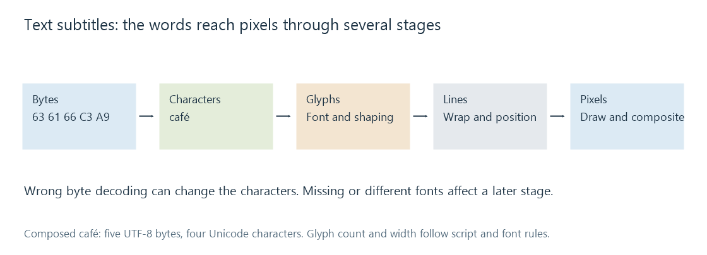

Text-based subtitles
Text-based subtitles store characters and timed presentation instructions that a renderer turns into visible glyphs.
Text-based subtitles store characters, rather than a finished image of the lettering. Timing and presentation instructions tell a renderer when and how to draw those characters.
This makes the words editable without repainting an image. It also leaves part of the displayed result to the renderer: decoding the characters, selecting fonts, shaping the script, laying out the lines, and producing pixels.

Bytes, characters and glyphs are different
In UTF-8, the word café occupies five bytes: 63 61 66 C3 A9. It has four Unicode characters in this composed spelling. Reading the last two bytes as the wrong legacy encoding can produce café instead.
That failure occurs before typography. Installing another font does not repair characters that were decoded incorrectly. Conversely, correctly decoded characters can still display as missing-glyph boxes when the selected font lacks their shapes.
A glyph is a drawn shape selected for the script and context. The correspondence need not be one character to one glyph: combining marks, ligatures and connected scripts can change the mapping. This is why a byte count is not a useful measure of the rendered line width.
Layout depends on actual font metrics
Consider an invented subtitle box with 300 pixels of available width. One font produces a line whose glyph advances total 280 pixels. A fallback totals 320. The first fits; the second needs another layout decision, such as wrapping.
The words and cue times have not changed. The difference is the font's metrics. For precisely positioned text, a changed width can also move the line relative to an alignment anchor.
Formats vary in how much presentation they specify. A simple SRT can leave most choices to the app. ASS or TTML can carry more detailed styling and placement. Font attachments provide supporting resources, but the renderer consuming the subtitle must actually receive and use them.
Preserving the text is one level of conversion
If a cue reads “Meet me outside” from 10 to 12 seconds, a simple conversion can preserve those words and that interval. A source may additionally place the words on a sign, draw an outline and move them during the cue. A format unable to represent those instructions preserves less of the intended presentation.
For an Emby route that converts subtitles for the selected client, compare wording, times and presentation separately. An intact sentence can look different after conversion without implying that the video itself changed.
The final visible text is still a rasterized image, even though its source is character data. The advantage is that the player can rerender those characters at an appropriate output size and, where the format and app permit, apply the viewer's text preferences.
See Also
- SubRip subtitles (SRT)
- Advanced SubStation Alpha subtitles (ASS)
- WebVTT subtitles
- Matroska Attachments